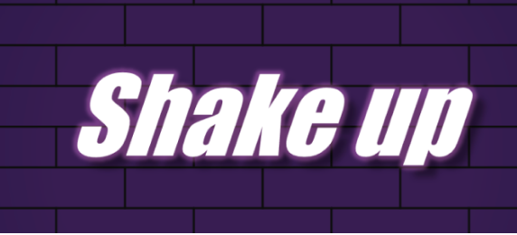
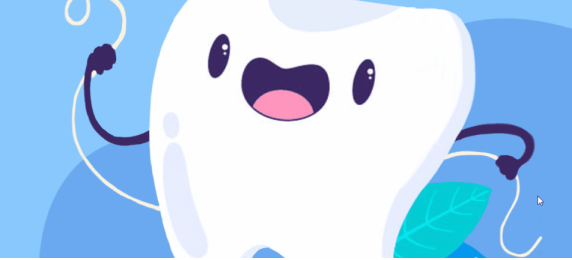
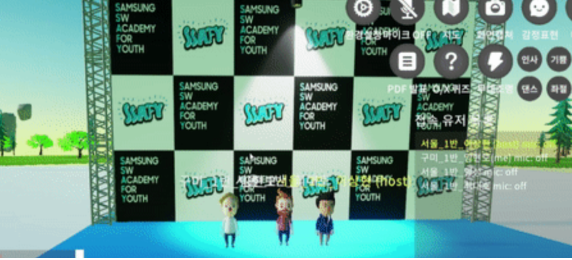

01 / JAN — FEB 2022
Shake-Up
An online space to learn, practise and share dance with computer-vision-assisted feedback.
 May Rhee
May Rhee
SELECTED WORK / 2022
Explore the case studies, or turn the notebook pages.
Browse as a notebook ↗
01 / JAN — FEB 2022
An online space to learn, practise and share dance with computer-vision-assisted feedback.

02 / FEB — APR 2022
A data-driven dental-insurance search, recommendation and comparison experience.

03 / APR — MAY 2022
A shared virtual-event space with stages, games, exhibition areas and social activities.

04 / 2022
A new shopping discovery concept developed for Kurly Hack Festa 2022.